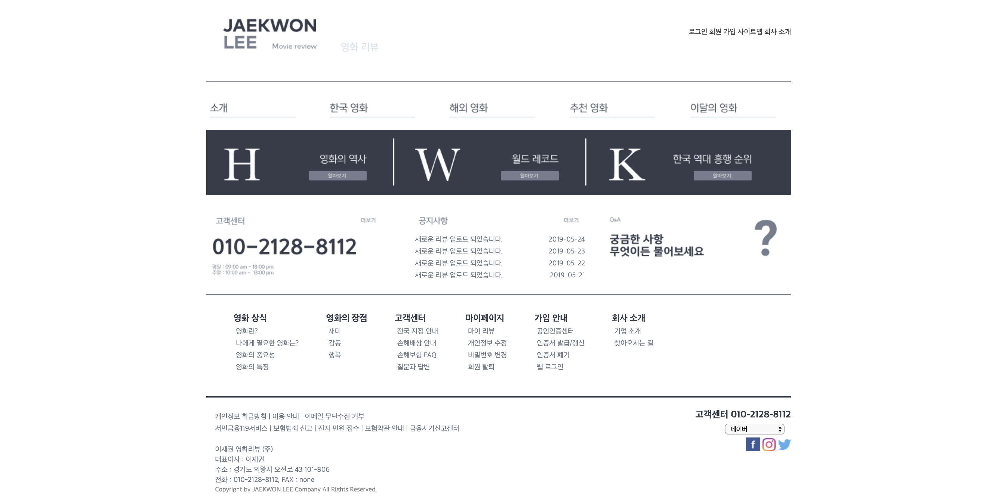

중간고사 영화 소개 페이지
중간고사때 만든 영화 소개 페이지다. 내가 제작한 페이지는
마블의 영화 22편을 페이즈 1,2,3로 나누어서 구성한 페이지이다.

11주차 웹페이지 구성
책의 있는 레이아웃을 토대로 구성한 페이지이다. 나는 영화 리뷰페이지를 주제로 페이지를 구성해 보았으며 section, header, footer 등 html5를 구성하는 주요 태그들을 배웠다.

반응형 웹페이지 여행이야기
베트남 여행이야기를 반응형 웹으로 구성한 페이지이다. 이때까지만 해도
내가 반응형 웹을 할 수 있는 줄 알았다. 나의 큰 오산으로 기말고사때 반응형 웹을 완성하지 못해서 너무나 아쉽다..